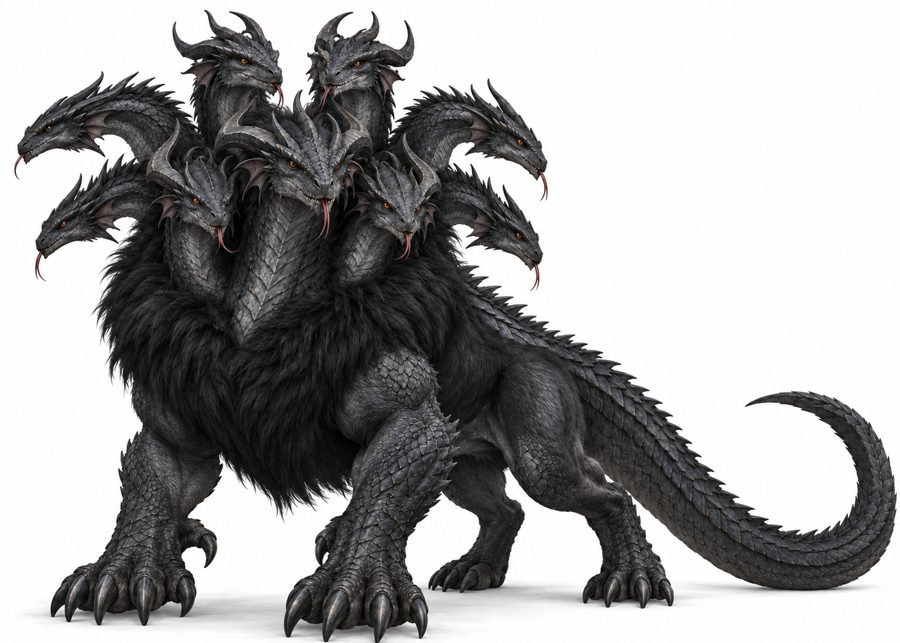
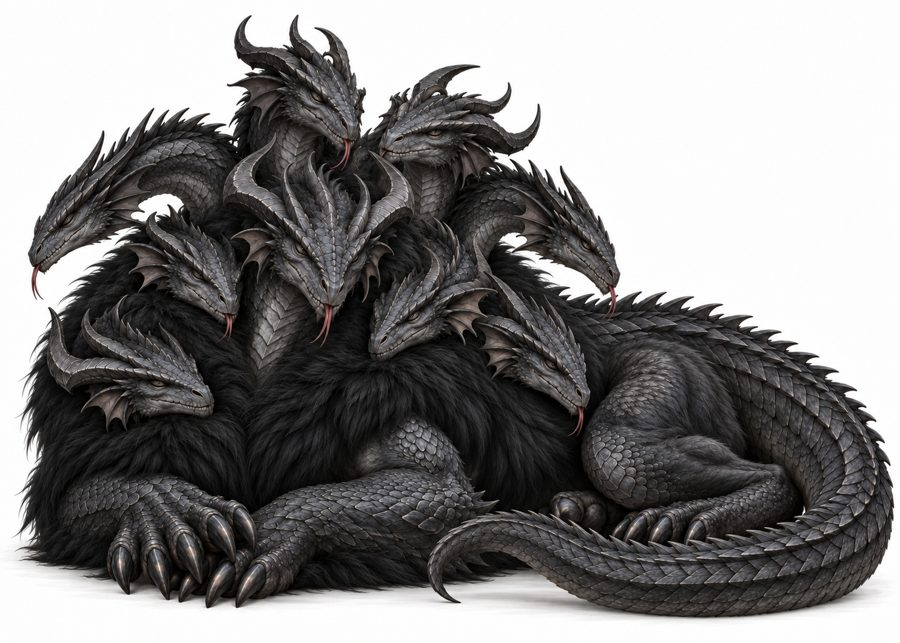

Navaxushe
The nine-headed fury. Best known as the heraldic symbol of Ishphaeno’s founder.
- Group
- Legendary
- Tags
- legendary heraldry
- Form
- Nine dragon-like heads on a shaggy, furred body with a scaled tail and clawed legs. Soot-black fur forms a mantle across the chest and shoulders. Decided
- Standing in the culture
- The symbol of the founding sovereign, and a figure in the night sky. It stands for the species as a whole. Canon
In the sky
The Navaxushe is a constellation beside the Seat, with nine stars for nine heads. Canon
Notes
Its natural history and range are still to be written. Placeholder

